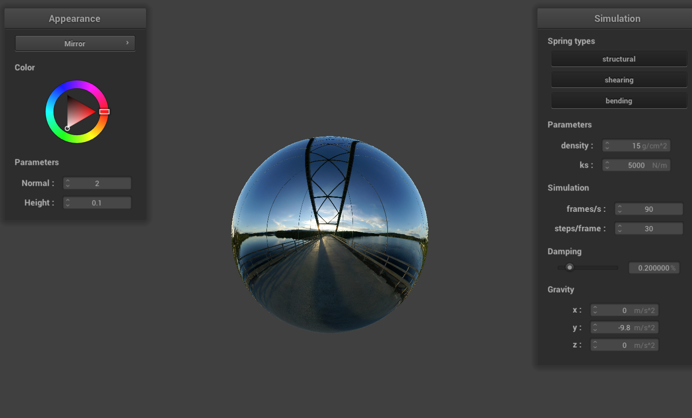

CS184/284A Spring 2025 Homework 4 Write-Up
Link to webpage: cal-cs184-student.github.io/hw-webpages-ss_webpage

Overview
In this homework, we implement a cloth simulation system using a mass-spring model. We first implement a basic simulation of a cloth-like object using a mass-spring system, where each vertex is represented as a point mass connected by three types of springs (structural, shearing and bending).
We then implement a numerical integration method to simulate the motion of the cloth over time, taking into account forces such as gravity and damping.
We also implement a collision detection and response system to handle interactions between the cloth and other objects in the scene, such as a sphere or a plane. Then, we implement a self-collision detection system to handle cases where the cloth collides with itself. We use a hash table to efficiently detect self-collisions with vertex pairs that are close to each other.
Finally, we implement a shader program to render the cloth with various shading techniques, including diffuse, Phong shading, texture mapping, bump mapping, displacement mapping and mirror-like reflections.
1. Section I: Masses and springs
Results:

2. Section II: Simulation via numerical integration
Results:
As can be seen, the fabric seems to be more "softened" as the spring force isn't strong enough to hold the fabric together. The fabric is more likely to be "pulled down" by gravity, resulting in the "waves" on it. When ks is high, the fabric becomes more "stiffened", resisting deformation from gravity.
The lower the density, the lighter the fabric is, resulting in it falling down slower due to energy loss (e.g., friction). As the density increases, the material becomes more robust to energy loss and more likely to be pulled downward by gravity, causing a wavier appearance.
Totally no energy loss results in the cloth swinging back and forth forever, and presenting dramatic waves since the energy is not lost at all. It also falls down super fast.
By contrast, the material becomes stiff and clumsy, falls down very slowly, and the waves are not obvious.
The following videos show the simulation of the cloth with different parameters mentioned above:
Original params
Low ks
High ks
Low density
High density
Low damping
High damping
3. Section III: Handling collisions with other objects
Implementation:
-
Sphere: Use the sphere's center and radius to check if the vertex is within the sphere. If so:
$$ tangent = origin + \left(\frac{dir}{dist}\right) \cdot radius; $$Where origin is the vertex position, dir is the vector from center to vertex, and dist is their distance.
The new vertex position:$$ position = last\_position + (1 - friction) \cdot (tangent - last\_position) $$ -
Plane: Check if a PointMass crosses the plane by sign change in:
$$ signed\_distance = (last\_position - point) \cdot normal $$If sign changes:$$ tangent = last\_position + t \cdot (position - last\_position); $$Add offset to avoid artifacts:$$ target += surface\_offset \cdot offset\_dir $$Final update:$$ position = last\_position + (1 - friction) \cdot (tangent - last\_position) $$
Results:

As shown above, higher ks leads to a stiffer fabric. It's less likely to wrap over the sphere and maintains its original shape.
 |
The cloth is shaded with bump mapping and Phong shading. As seen, the cloth correctly collides with the plane.
4. Section IV: Handling Self-Collisions
Implementation:
To efficiently detect self-collisions, we use a hashtable to reduce the computational complexity from
\(O(n^2)\) to \(O(n)\). This ensures that only nearby PointMass objects are checked for potential collisions.
The hashtable is built based on positions using hash_position(). For example, along the x-axis:
float w = 5 * width / num_width_points;
int bx = floor(pos.x / w);
The build_hash_table() function stores PointMass objects in hash buckets.
Then in self_collide(), only masses in the same bucket are checked.
If the distance is smaller than twice the thickness, a correction is averaged and applied:
correction /= (count * simulation_steps);
pm.position += correction;
Results:
(1) Self-Collision Behavior:
The cloth successfully demonstrates self-collision:
 |
 |
 |
|
 |
 |
Self-collision video:
(2) Parameter Study: Density and ks
i. Varying Density
|
density = 1 |
density = 1 (alt view) |
|
density = 100 |
density = 500 |
Low density: Cloth appears soft and easily collapses onto itself.
High density: Cloth becomes heavier and may fall through the collision plane if too fast.
ii. Varying ks (Spring Constant)

ks = 1000 |

ks = 5000 |

ks = 50000 |
.png)
ks = 50000 (alt view) |
Low ks: Cloth is soft and sags more.
High ks: Cloth holds its shape better but may cause instability.
5. Section V: Shaders
5.1 Explanation:
A shader program runs on the GPU and includes the vertex shader and fragment shader. The vertex shader computes geometry transformations; the fragment shader computes lighting and color.
For example, the mirror shader computes reflection using surface normals and view direction. Shaders run in parallel on GPU for real-time performance.
5.2 Phong Shading
Blinn-Phong shading formula:
 |
 |
| Ambient only | Diffuse only |
 |
|
| Specular only | Full Phong lighting |
5.3 Texture Mapping
Texture mapping samples colors from an image using UV coordinates:
5.4 Bump & Displacement Mapping
Bump mapping: Fake surface detail via normal perturbation.
Displacement mapping: Actually changes vertex positions.
 |
 |
| Bump-mapped sphere | Bump-mapped cloth |
 |
 |
| Displacement sphere | Displacement cloth |
Low vs. high resolution comparison:
 |
 |
| Bump (16×16) | Bump (128×128) |
 |
|
| Displacement (16×16) | Displacement (128×128) |
- Higher mesh resolution improves visual smoothness.
- Bump mapping unaffected much by resolution.
- Displacement mapping benefits from high resolution.
5.5 Mirror Shader
Simulates reflective surfaces by sampling the environment using reflected view direction.
|  | |
| Mirror sphere | Mirror cloth |